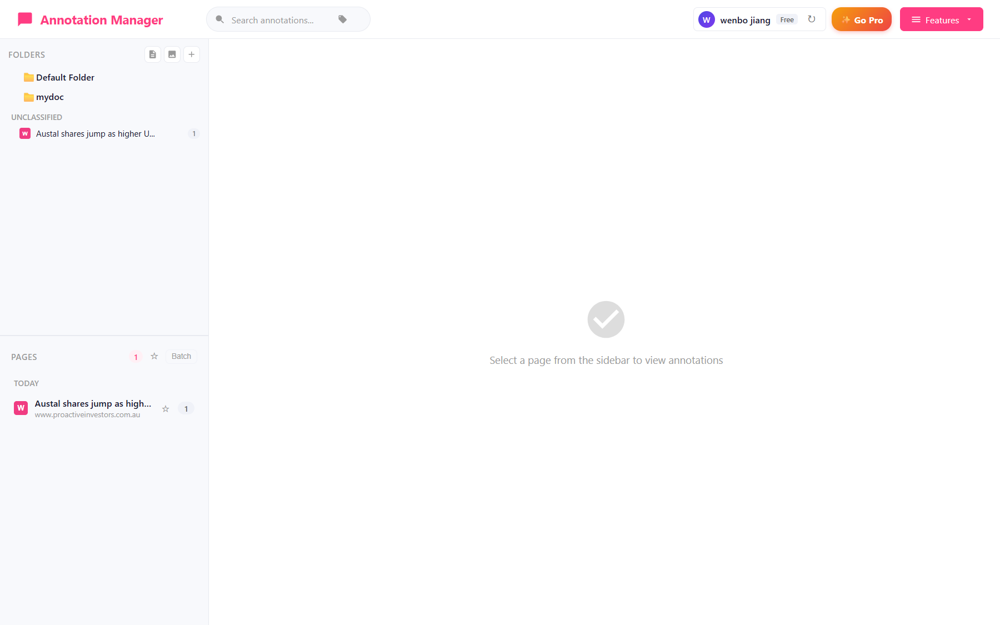

标注管理器
你的标注大本营：每个页面、每条高亮、绘图、批注和快照——可浏览、可搜索、可编辑、可备份。
打开管理器
- 在任意页面：打开控制面板的更多（⋯）菜单 → 标注管理。
- 从工具栏：点击 Sagitnote 图标 → 标注管理。
管理器在独立的浏览器标签页中打开。注册并登录过一次后，标注库就保存在本浏览器中——离线时同样可用。
界面总览

- 顶栏 — 全局搜索、账号信息、立即同步和功能菜单（导入导出、分享管理、设置等）。
- 左侧边栏 — 文件夹树，含收藏与最近页面。
- 页面列表 — 每个标注过的页面，带标题与标注数量。
- 详情视图 — 选中页面的全部标注，含截图与批注内容。
浏览与搜索
- 顶栏的搜索框能搜索标注的引用文字、批注内容、标签、页面标题与域名，甚至自建文档的正文；还可以叠加标签过滤。
- 点侧边栏的文件夹收窄页面列表；点星形按钮可切换只看收藏。
- 选中页面查看它的全部标注，可按类型筛选、按位置或时间排序。
查看与编辑标注
选中页面即可浏览它的标注。每张卡片显示类型、内容预览、批注、标签和作者（当页面有多人标注时）。卡片上可以打开原页面、编辑标注的批注和标签，或删除。
颜色、样式和位置的修改要在页面本身完成：打开页面后用标注的快捷弹层或列表抽屉的"标注详情"。在任何一端做的修改都会同步——下次访问页面看到的就是更新后的标注。
文件夹与收藏
点侧边栏的 ➕ 按钮新建文件夹（支持多级子目录），按项目或主题整理页面。移动页面用页面的 ⋯ 菜单、文件夹右键菜单或批量模式（多选后移动）。删除文件夹不会丢页面——里面的页面会变成未分类。给页面加星（面板更多菜单 → 收藏，或列表里的 ★），再用 ☆ 按钮筛选只看收藏。
导入与导出
备份标注库或在多台电脑之间迁移：打开功能 → 导入导出。
- 导出当前页面 — 一个页面的标注与内容。
- 导出全部 — 完整备份：文件夹、页面、标注、标签、文档、快照与图片，打包成一个压缩文件。
- 增量导出 — 把标注库以 Markdown 写入你选择的文件夹；以后再次运行时只更新变化的部分。适合维护一份始终最新的 Markdown 副本（如 Obsidian）。
- 导入 — 从导出文件恢复；可选择跳过已有标注或覆盖。
导出格式：免费版支持 JSON、CSV、Markdown；Pro 额外支持 HTML。
云同步
登录后，标注库会备份到你的账号，并在所有登录同一账号的设备间保持一致（免费版与 Pro 均受每日新建限额约束，Pro 额度更高）。
- 自动同步 — 本地改动会自动推送（聚合后通常半分钟内）；其他设备的更新每隔几分钟自动拉取，登录和打开管理器时也会同步。
- 立即同步 — 立刻推送并拉取；也能解除自动同步的暂停。
- 同步失败 — 顶栏图标列出上传失败的条目（含原因），可逐条重试，也可全部重试；失败条目会自动重试最多 10 次。
- 在另一台设备登录同一账号，即可把标注库带过去。
服务暂时不可达时自动同步会暂停并自行恢复；冲突自动解决（以最新修改为准）并在同步摘要中报告。
分享
把自建文档的标注分享给别人：打开该文档（或文档快照），更多（⋯）→ 分享批注。选择接收方能做什么——查看、标注、回复、编辑——可选为链接设置访问口令，并指定有效期（1–30 天）。任何人用链接即可在普通浏览器中查看，无需安装扩展。
打开功能 → 分享管理管理已分享的内容：复制链接、调整权限或有效期、重新生成链接（旧链接立即失效）、停用或删除分享，并查看互动人数。协作者的回复会在你打开页面时直接显示在页面上。
功能菜单

| 菜单项 | 作用 |
|---|---|
| 我的信息 | 查看账号信息与用量。 |
| 新建文档 | 创建一篇自建文档（见自建文档）。 |
| 从图片新建文档 | 把本地图片直接汇成一篇可标注的文档。 |
| 导入导出 | 备份与恢复标注（见上文）。 |
| 分享管理 | 管理分享链接。 |
| 设置 | 打开扩展设置（调色板、图片批注、显示、数据管理、主题、快捷键）。 |
| 标注开关 | 临时显示/隐藏所有标注。 |
| 反馈与建议 | 向团队提交反馈。 |
| 帮助文档 | 打开本帮助文档。 |
| 退出并清空 | 退出登录；可选择同时清空本机的本地标注数据。 |
获取帮助
遇到问题？通过功能菜单里的反馈与建议联系我们，或发邮件到 service@webnoteshub.com。快捷修复方案见问题排查与常见问题页面。